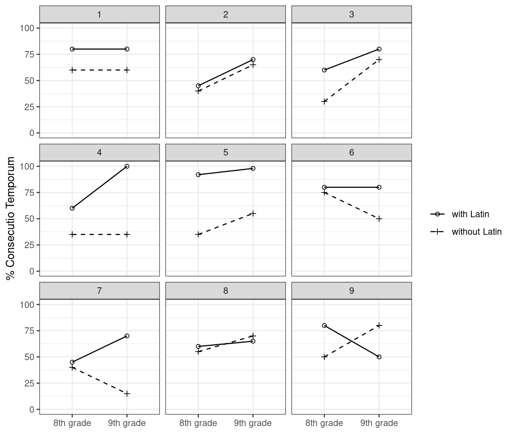

klasse <- c("8. Klasse", "9. Klasse")
latein <- c("mit Latin", "ohne Latein")
d <- expand.grid(Klasse = klasse, Latein = latein,
Grafik = 1:9)
d$Ergebnis <- 10*c(
8, 8, 6, 6,
4.5, 7, 4, 6.5,
6, 8, 3, 7,
6, 10, 3.5, 3.5,
9.2, 9.8, 3.5, 5.5,
8, 8, 7.5, 5,
4.5, 7, 4, 1.5,
6, 6.5, 5.5, 7,
8, 5, 5, 8
)
library(tidyverse)── Attaching core tidyverse packages ──────────────────────── tidyverse 2.0.0 ──
✔ dplyr 1.1.4 ✔ readr 2.1.5
✔ forcats 1.0.0 ✔ stringr 1.5.1
✔ ggplot2 3.5.1 ✔ tibble 3.2.1
✔ lubridate 1.9.3 ✔ tidyr 1.3.1
✔ purrr 1.0.2
── Conflicts ────────────────────────────────────────── tidyverse_conflicts() ──
✖ dplyr::filter() masks stats::filter()
✖ dplyr::lag() masks stats::lag()
ℹ Use the conflicted package (<http://conflicted.r-lib.org/>) to force all conflicts to become errorsggplot(d,
aes(x = Klasse, y = Ergebnis,
linetype = Latein, shape = Latein,
group = Latein)) +
geom_point() +
geom_line() +
scale_x_discrete(name = element_blank(),
labels = c("8th grade", "9th grade")) +
ylim(0, 100) +
scale_linetype_manual(name = element_blank(),
values = c("solid", "dashed"),
labels = c("with Latin", "without Latin")) +
scale_shape_manual(name = element_blank(),
values = c(1, 3),
labels = c("with Latin", "without Latin")) +
ylab("% Consecutio Temporum") +
facet_wrap(~ Grafik, ncol = 3) +
theme(legend.position = "bottom") +
theme_bw()